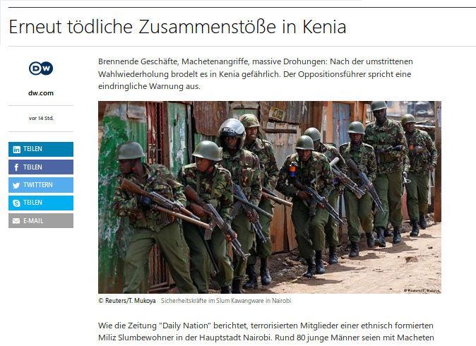

Kenya schreibt Geschichte
-
-
Wahlverfahren für den Präsidenten
Eigentlich müsste die Ergebnisübermittlung schnellstens analysiert und nachgeprüft werden. Nach dem jetzigen Verfahren wird in den Wahllokalen abgestimmt, und vorerst wird das Abstimmungsmaterial kontrolliert, namentlich Stimmzettelkontrolle. Es werden festgehalten: Anzahl verfügbare Stimmzettel im Wahllokal, ungenutzte Stimmzettel, ausgefüllte Stimmzettel, ungültige ausgefüllte Stimmzettel, gültige Stimmzettel, Anzahl registrierte Wähler. Die gültigen Stimmzettel werden den Kandidaten zugeordnet, das Ergebnis wird protokolliert, die Wahlurnen versiegelt. Dieses Material wird dem Auszählungszentrum des Bezirkes (Constituency=Wahlkreis eines nationalen Abgeordneten) übergeben, das die Ergebnisse der Wahllokale zusammenzieht und auf einem Formular protokolliert. Alle Constituencies senden die Wahlprotokolle an das nationale Auszählungszentrum, der den Zusammenzug macht und anhand diesem wird das Resultat der Präsidentenwahl ermittelt.
Gleichzeitig senden die Wahllokale die Ergebnisse elektronisch an das nationale Auszählungszentrum, das die Ergebnisse bei Erhalt online stellt.
Da ist natürlich die Klage von Raila glaubwürdig, dass beim Zentralcomputer der nationalen Behörde etwas manipuliert wurde. Ich nehme an, dass die Parteigänger von Raila, die bei den Wahllokalen anwesend gewesen sind, die Resultate notiert haben, und dann gemeldet haben. Anhand dieser Resultate muss Raila zum Schluss gekommen sein, dass die Zahlen des Zentralcomputers nicht mit den vor Ort erhobenen Abstimmungsresultaten übereinstimmen. Man müsste jetzt die Anzahl der Wahlstimmen auf den Protokollen mit der Anzahl der Wahlstimmen im Zentralcomputer vergleichen.
Aber Achtung! Die Originale der Protokolle der Wahllokale wurden dem Auszählungszentrum der Wahlbezirke (Constituencies) zugeschickt, da muss man kontrollieren, ob nicht Protokolle gefälscht werden! und die Stimmenzahl nachträglich den allfällig gefälschten Daten im Zentralcomputer angepasst wird.
Auf jeden Fall hat das Oberste Gericht etwas Faules entdeckt, und um eine Staatskrise zu vermeiden, wird die Wahl wiederholt, was auch nicht gut ist für die Demokratie.
**************************************************************************************************************
Für die nächste Wahl müssen die unabhängigen Wahlbeobachter die Ergebnisse auf Stufe Wahllokal bestätigen, somit keine Möglichkeit der Wahlfälschung auf dem Uebermittlungsweg mehr möglich ist.
****************************************************************************************************************
@Wanjiku
Historisches Ereignis... na ja... Aber eigentlich müsste die Sache doch sofort aufgearbeitet werden und die
elektronisch gespeicherten Daten und die Abstimmungsprotokolle ausgewertet werden. Es hat eine Wahl gegeben, und es sollte möglich sein der Sache auf den Grund zu gehen und den Wahlsieger zu ermitteln.
Im Gegensatz zu früher hat es schliesslich grosse Fortschritte gegeben bezüglich dem Wahlbetrug: die Wahlzettel werden anscheinend weitgehend korrekt ausgezählt und es liegen keine gefälschten Wahlzettel vor.
-
... Uhuru Kenyatta anstatt den Ungereimtheiten auf den Grund zu gehen droht er jetzt dem Supreme Court

naja ... war nicht anders zu erwarten
Nach Aussage eines amerikanischen Spezialisten der kurz vor der Wahl deportiert wurde, nachdem bewaffnete Männer in Zivil ihn gefangen namen, war die Wahl massiv gefälscht.
Sie schnitten damals noch alle Netzwerk-Kabel durch, beschlagnahmten die Computer, und auf dem Weg zum Airport wurden dem Amerikaner Folter-Videos gezeigt um ihn einzuschüchtern.
nation.co.ke/news/Nasa-deporte…079982-bgv66uz/index.html
Die nächste Wahl in 60 Tagen wird vermutlich auch wieder gefälscht werden.
Der kurz vor der Wahl gefolterte und ermordete IEBC IT Manager Chris Msando -
-
Hallo zusammen,
ich melde mich einmal wieder. Kurz zum meiner Person: Meine Tochter schließt am 31.10. und 02.11.17 das Examen der 8. Klasse ab bzw. hat da Ihre Prüfungen. Ich hoffe doch, dass es durch die Neuwahlen keine weiteren Unruhen gibt, was fast nicht auszuschließen ist.
Ich habe noch keine aktuelles Bild über die Situation in Kenia. Was wäre besser für das Land. Kenyatta oder Odinga????
Oder keiner von beiden. Die sollen doch Barak Obama wählen, aber der holt sich den Stress nicht mehr rein. .
.
Ich will einfach, dass Kenia zum Vorzeigestaat in Ostafrika wird und da waren sie auf einem guten Weg.
Für mich und meine Tochter sind die nächsten politischen Entscheidungen sehr wichtig. Meine Tochter Nathalia (15) schließt nun die 8. Klasse ab. Es stellt sich die Frage. Geht sie auf die High School in Kenia oder hole ich sie nach Deutschland.
Noch weiss ich nicht welche Entscheidung ich treffen soll. Das hängt aber auch von der künftigen politischen Situation ab.
Bei uns in Deutschland stehen noch zuvor Wahlen an und es wird sich nichts ändern. Im Gegenteil, dann gehts erst richtig los gegen Einwanderung, auch wenn ich als deutscher mit 45 Berufsjahren, Vater einer Tochter bin die in Kenia lebt und nach der Schule gerne nach Deutschland kommen würde.
Oh, mein Gott ist das alles schwierig. Was ist da eure Meinung.
Viele Grüße aus Stuttgart.
frabe21 -
... ich glaube die die gegen diese sinnlose vorwiegend muslimische Immigration von Analphabeten in großer Zahl sind, dass sind eher so die älteren ... meine Generation. Aber zu alt um eine Bedrohung zu sein. (außer griesgrämig dreinschauen oder welche mit dem Rollator überrollen
 )
)
Die Jüngeren checken nicht die Konsequenzen und sie sind auch zahlenmäßig wenig. Die Konflikte hier in Deutschland werden sich eher zwischen den verschiedenen Migrantengruppen abspielen. Die nächsten 10 Jahre lohnt es sich sicherlich für junge Kenianer nach Deutschland zu kommen. Das Studium ist immer noch kostenlos in Deutschland, was sehr gut ist für junge Menschen.
Falls es wirklich ungemütlich in Deutschland werden sollte, kann man dann nach Studium oder Ausbildung entweder nach Kenia zurückgehen oder in ein anderes Land.
Odinga hat mehr für Kenya getan als Uhuru Kenyatta, welcher nur Präsident ist aufgrund seiner Ethnie und Wahlbetrug.
Raila Odinga hat die neue Verfassung für Kenya initiert , welche ein großer Fortschritt ist. Ebenso ist auch NARC ein Erfolg von Raila gewesen.
-
@frabe21
Gut, dass man was von Dir wieder etwas hört. Anscheinend ist mit der Ausbildung Deiner Tochter alles gut gegangen. Schön!
Bevor Du Deine Tochter nach Deutschland holst, würde ich mich bei der Berufs-, Laufbahnberatung erkundigen, was es für Möglichkeiten gibt für eine 15-jährige Deutsch-Kenianerin, die kein Deutsch spricht. Auch bezüglich staatlich geförderter Sprachunterricht, Förder- und Stützunterricht etc. Schauen, was das Mädchen für Interessen und Wünsche hat, ev. ist auch eine Lehre, berufsspezifische Ausbildungslehrgang sinnvoll.
Wegen der politischen Lage würde ich mir weder in Kenia noch in Deutschland grosse Sorgen machen, aber die Arbeitsmarktlage ist relevant: in Deutschland droht Ueberalterung und Arbeitskräftemangel, daher gute Anstellungsmöglichkeiten und Bedingungen für junge Leute, die etwas können. In Kenia kann der Arbeitsmarkt die Massen an jungen Leuten, auch Uniabsolventen gar nicht absorbieren. Was vielleicht nicht schlecht wäre, in Kenia etwas zu lernen, was nach internationalen Standards gelehrt wird, und somit überall ausgeübt werden kann, wie Krankenschwester, Buchprüfer, etc. dann parallel Deutsch lernen und später nach Deutschland übersiedeln.
Wegen dem Zugang zur High School muss Deine Tochter die Ergebnisse der Abschlussprüfungen der Primary School abwarten. Aber die Chance ist sehr gross, dass sie einen Platz kriegt für die High School , am besten natürlich an einer guten staatlichen Schule in Mombasa. Uhuru hat ja versprochen, dass die School fees an der Secondary School abgeschafft werden. Dann weiter für die Uni, gibt es in ganz Kenya viele staatliche Universitäten und die School fees sind niedrig. Aber das Problem ist, dass die staatlichen Universitäten unterfinanziert sind, und daher sich die Schulleitungen ausgeholfen haben, indem sie die Anzahl zugelassener Studenten massiv erhöht haben, bei gleichbleibenden Kapazitäten. Da leidet das Ausbildungsniveau
beträchtlich. Was kostet bei den Studenten sind Unterkunft und Verpflegung, da viele ausserhalb des Wohnortes ihrer Eltern studieren und wohnen. -
-
Hallo zusammen, was tut sich in Kenia. Leider hört man in den deutschen Medien fast nichts. Hat die Wahl vom letzten Donnerstag, 26.10. Gültigkeit oder gibt es eine Wiederholung. Meine Tochter hat morgen 31.10.-02.11. die Abschlussprüfungen in der Schule ( 8. Klasse ) und ich hoffe, dass es in Mombasa keine Krawalle gibt.
-
Es brodelt:
https://www.msn.com/de-de/nachrichten/politik/erneut-t%C3%B6dliche-zusammenst%C3%B6%C3%9Fe-in-kenia/ar-AAucgLx?srcref=rss

Auch links bei den Blog News Kenia finden sich auf englisch paar Informationen
Gruß mzungu
-
...ja das ist traurig. Demokratie erodiert scheinbar vielerorts.
Dieses mal habe ich Einreise über Sansibar und Rückreise von Nairobi gebucht. Wenn sich die Lage verschlimmern sollte werde ich wohl einen Flug von Kilimanjaro oder Dar zum JKIA buchen.
Hoffentlich eskaliert die Situation nicht. Ich habe Freunde auf beiden Seiten -
wanjiku schrieb:
Raila Odinga hat die neue Verfassung für Kenya initiert , welche ein großer Fortschritt ist.
Da bin ich aber skeptisch (natürlich gut für Kenya: Ausländer, die ein Grundstück in Kenia besitzen gelten ab sofort als enteignet, dürfen jedoch einen leasehold abschließen....).
Wer besser für Kenya und die Menschen wäre ist für mich ganz klar - eine Regelung, dass jede Tribe einmal den Prädenten stellen darf - es werden immer 5 gewählt, jeder hat ein Jahr das Sagen, die anderen kontrollieren.
Raila wäre in Deutschland oder Österreich spätestens nachdem er sich ohne jegliche Legitimation zum Präsidenten hat ausrufen lassen als Staatsverweigerer in haftiert worden. Es ist auch bezeichnend, dass bei jeder seiner "Wahl-"veranstaltungen IMMER Gewalt gegen andere, gegen Geschäfte und Autobesitzer vorherrscht. Wer seine Anhänger nicht in den Griff bekommt, muss meiner Ansicht nach auf Aufmärsche verzichten (egal ob ich denjenigen mag oder nicht). Und so Aufrufe "boykottieren wir Safaricom", "keine Milch mehr" und ähnliches....?
Leider erinnere ich mich noch sehr gut an seine Live-Fernsehansprache mit dem Aufruf zur Gewalt "No Raila as President - no Peace" and "Kenya will burn". Kurz danach wurden tatsächlich die Kirche in Eldoret und zahlreiche Häuser in Nakuru und in Naivasha niedergebrannt - alle mit den Menschen noch drinnen! Besser für Kenia??
Bei der Wahl haben sicher (!) beide betrogen und gewinnen wird immer (!) jener Kandidat der von Kikuyu & Co und den Kalenjin unterstützt wird. Da die ja alle nach Tribes wählen hat kein anderer Kandidat irgendeine Chance
Aber den Frust muss man halt anders abreagieren, nicht die Stimmung in der Bevölkerung aufheizen um Gewalt zu provozieren!
Dass die meistgesehenen Fernsehsender Raila zuzuordnen sind und praktisch nur Luo beschäftigen macht die Sache nicht einfacher.
@frabe21
wenn Du halbwegs ein Leben hast in Deutschland und sie das auch will: so früh als möglich Dein Kind aus Kenia nach Deutschland holen, damit sie eine gute Schulbildung erhält. In Kenia sind die Schulen (alle) grottenschlecht, weshalb sie auch in DE/AT praktisch nicht anerkannt werden. Sie (und somit auch Du) kann nur gewinnen!

-
Teilen
- Facebook 0
- Twitter 0
- Google Plus 0
-
 Reddit
0
Reddit
0
-
Benutzer online 3
-
Ähnliche Themen
-